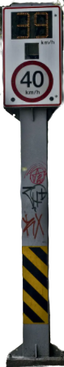

Neste teste vamos praticar condicionais simples, também conhecidas como desvios condicionais, onde a execução do bloco de código acontece quando determinada condição é satisfeita, não sendo necessária a execução caso essa condição não seja atendida.
Click na tela do radar, digite uma velocidade para o carro, click em verificar e veja o que acontece...
Para reiniciar click em limpar
